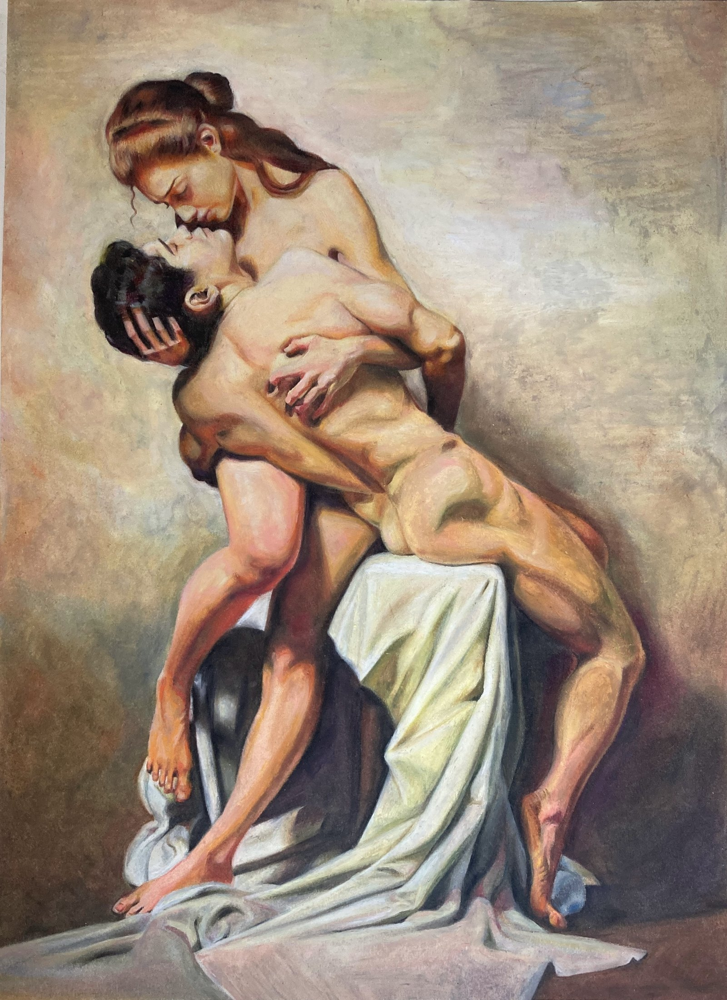
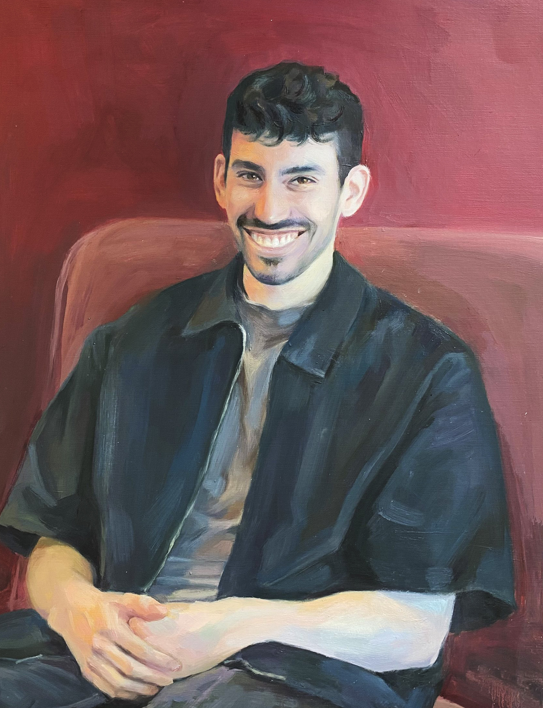
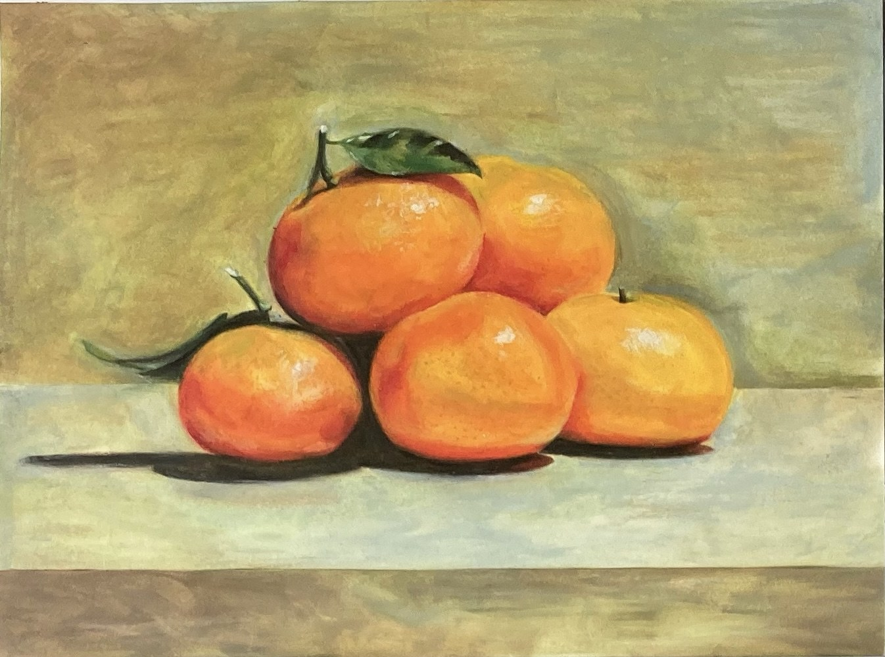
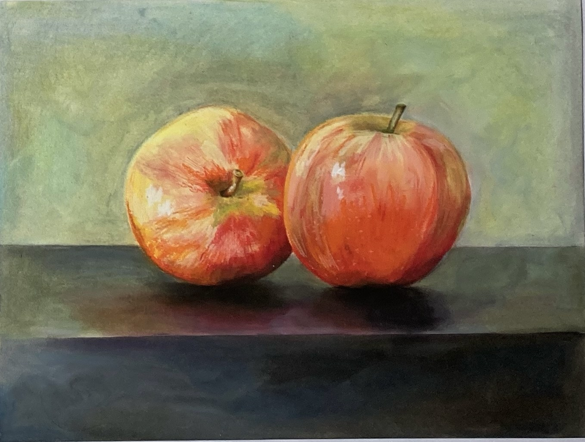
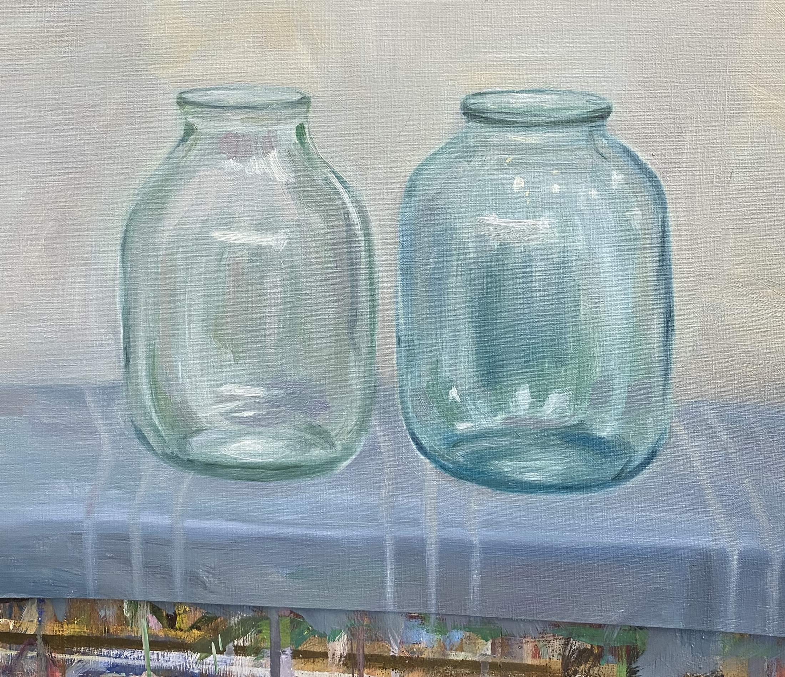
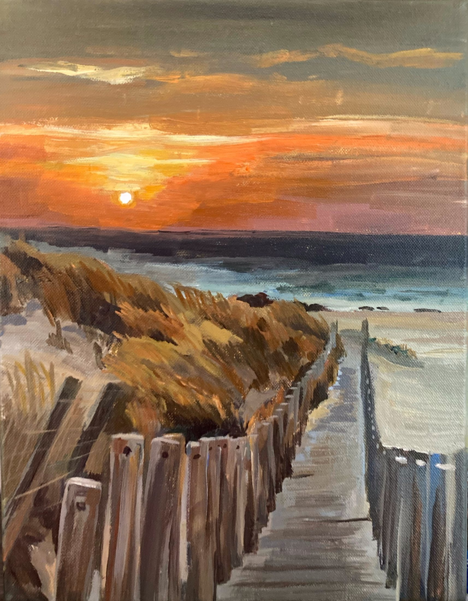
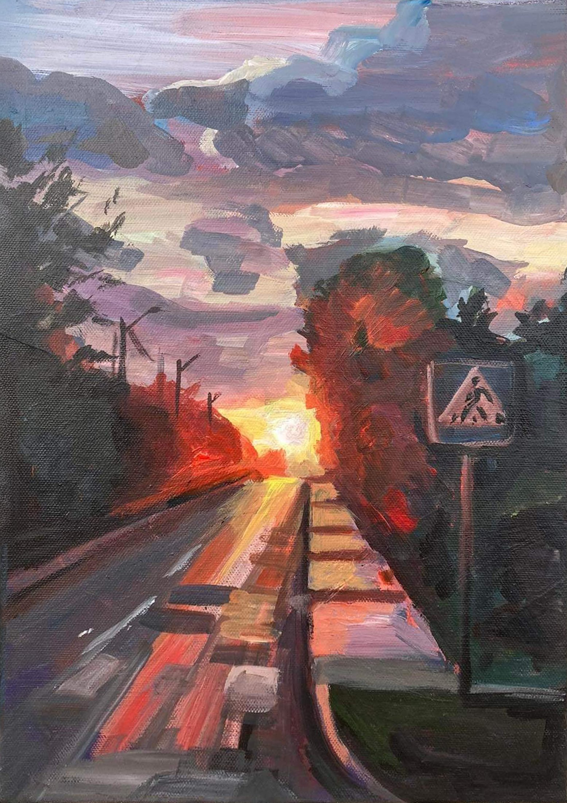

Selected works · 2019–2025
Paintings that hold a moment still.
Portraits, interiors, landscapes and still lifes shaped by colour, observation and the quiet details that make a moment feel personal.
View selected workSelected paintings
Observed closely,
remembered slowly.
My paintings centre on people, familiar interiors and everyday objects. Each work begins with observation and becomes a record of atmosphere, gesture and time.
Dinner
Hands
01 / People
Portraits
Portrait in a Blue Hat

Portrait with Dog

Holding On

Seated Portrait
02 / Objects
Still-life studies
Pears

Oranges

Apples

Glass Jars
Glass Bottles
03 / Place
Landscapes

Coastal Sunset

Sunset Road